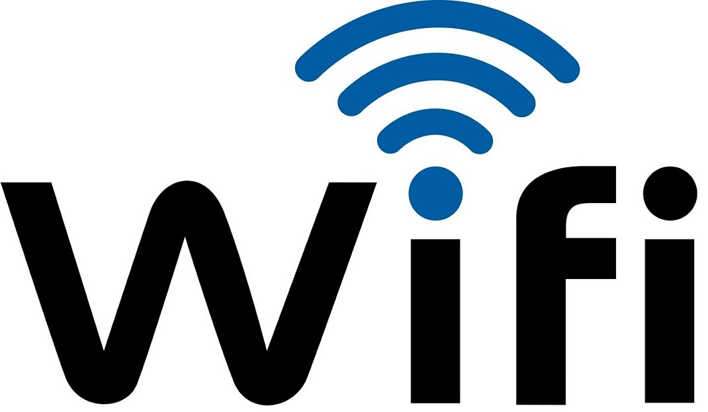
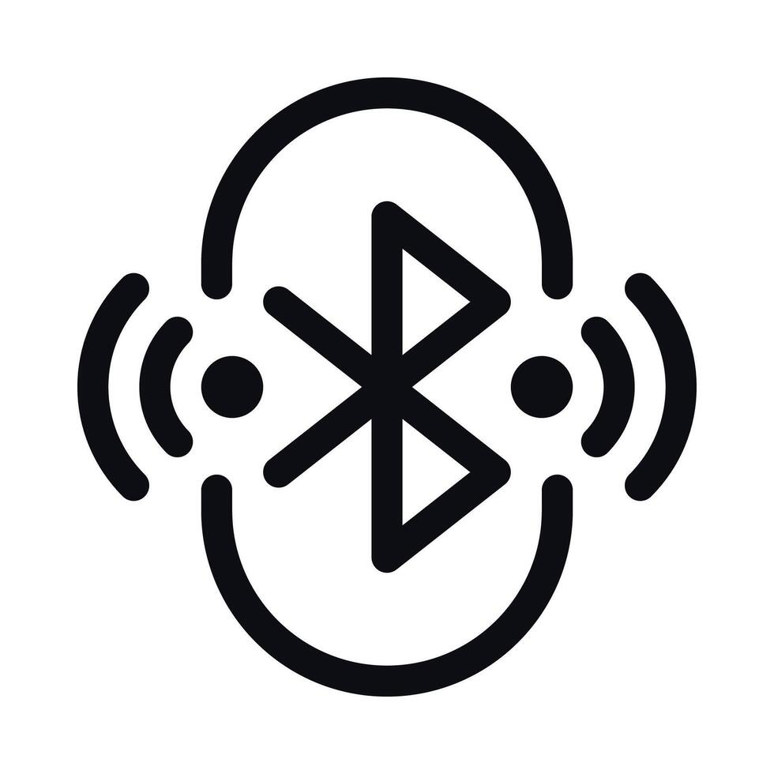

La raíz de los datos IoT es la conectividad entre los dispositivos y la red pero... ¿Cuáles son las conexiones qué se utilizan?
INTERNET DE LAS COSAS
Tipos de conexiones
Conectividad Wi-Fi
Es actualmente la más utilizada.
Mantiene a los dispositivos IoT activos en la red, pues constantemente están traspasando datos.
El router actúa como un receptor masivo de datos que se enviarán a las plataformas de control de datos.

Conectividad Bluetooth
Es una conexión que se caracteriza por ser de corto alcance. lo que hace que ofrezca transmisiones de información de hasta 2 milisegundos.
Se utiliza generalmente para la conexión entre dispositivos.

Conectividad celular
Es la alternativa exclusiva para móviles o tablets, que se utiliza cuando no hay otro punto de acceso a la red.
Esto es posible gracias a chips implantados en las placas bases de dichos productos.
Cuestionario SCORM
Obra publicada con Licencia Creative Commons Reconocimiento Compartir igual 4.0